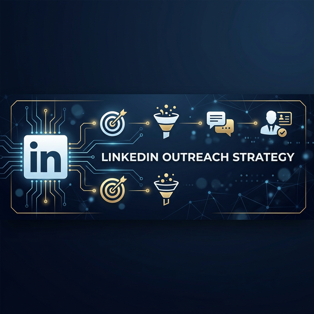
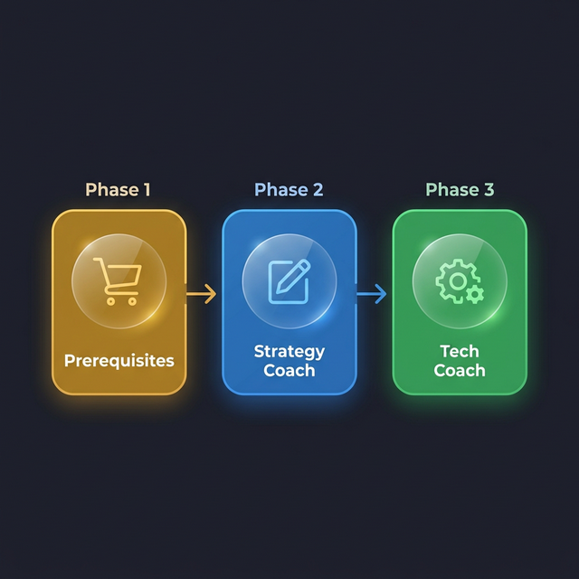
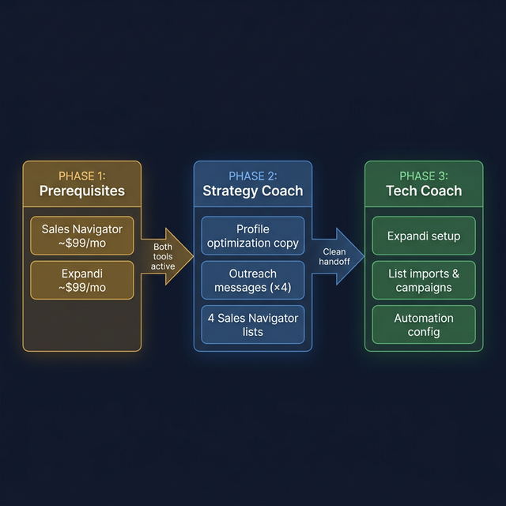
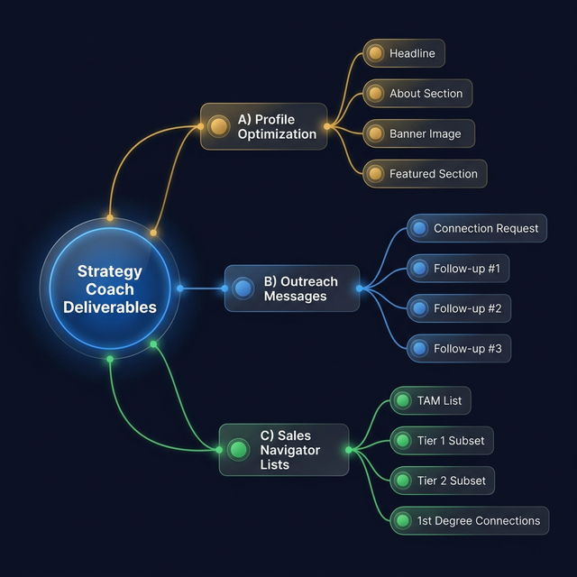
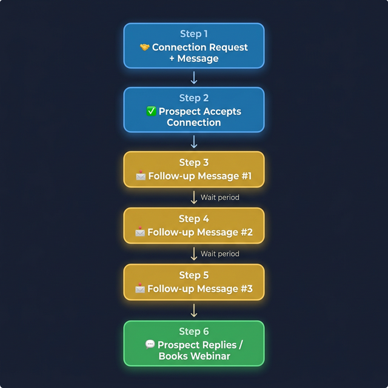
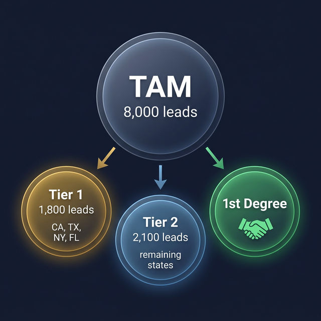

| 📅 Last Updated | February 27, 2026 |
| 👥 Audience | Strategy coaches new to the LinkedIn promotion workflow |
| 📌 Version | 1.0 |
The LinkedIn promotion strategy uses LinkedIn Sales Navigator + Expandi (an automation tool) to send targeted connection requests and follow-up messages that drive prospects to the client's webinar.
There are three phases with a clear handoff between strategy coach and tech coach:


| Tool | Monthly Cost | Purpose |
|---|---|---|
| 🔍 LinkedIn Sales Navigator | ~$99/month | Advanced search & lead lists |
| 🤖 Expandi | ~$99/month | Automated outreach & follow-ups |
| ~$198/month total |
Before any coaching calls
The client needs both tools purchased and active before you begin Phase 2.
| Scenario | What to Do |
|---|---|
| Client is self-sufficient | Share the QS video walkthrough for purchasing Sales Navigator. They handle it independently. |
| Client needs hand-holding | Schedule a short call with the tech coach to walk them through signup. |
Copy + Targeting — This is YOUR main responsibility
You need to deliver three categories of work before handing off to the tech coach:

The client's LinkedIn profile needs to be rewritten to align with their webinar and offer. Prepare the following:
| # | Deliverable | Details |
|---|---|---|
| 1 | Headline | Rewrite to align with the webinar/offer — not their job title |
| 2 | About Section | Describe who they are, what they do, and promote the webinar. Everything should point toward the webinar as the CTA |
| 3 | Banner Image | Tech coach provides a Canva template → client/VA creates the banner → should include a webinar invitation |
| 4 | Featured Section | Update with a direct link to the webinar registration/event page |
Write four messages total. All messages must be aligned to the client's specific offer, niche, and business:
| # | Message Type | Purpose |
|---|---|---|
| 1 | 🤝 Connection Request | The opening message sent with the connection request |
| 2 | 📩 Follow-up #1 | Sent after connection is accepted |
| 3 | 📩 Follow-up #2 | Second follow-up nudge |
| 4 | 📩 Follow-up #3 | Third and final follow-up |

Done LIVE with the Client — Do not skip the live session
You need to produce 4 saved lists:

| # | List Name | Description | Target Size |
|---|---|---|---|
| 1 | TAM (Total Addressable Market) | Full search with all core filters applied | Thousands |
| 2 | Tier 1 Subset | Narrower slice of TAM — narrow by geography or headcount | 1,000–2,500 |
| 3 | Tier 2 Subset | Different slice of TAM — use different filters than Tier 1 | 1,000–2,500 |
| 4 | 1st Degree Connections | Filter TAM for people already connected to the client | Varies |
Once you have completed everything in Phase 2, hand off to the tech coach. They will handle:
Send the tech coach all four items. No ambiguity, no missing pieces.
| # | 🚩 Problem | ✅ How to Avoid It |
|---|---|---|
| 1 | Client hasn't purchased Sales Navigator or Expandi | Confirm both are active BEFORE starting Phase 2 |
| 2 | Client can't remember their Apollo filters | Always build Sales Navigator lists live with the client — never ask them to do it alone |
| 3 | Lists are too large for Expandi | Keep each list between 1,000 and 2,500 leads. Break the TAM into smaller segments using additional filters |
| 4 | Profile copy doesn't mention the webinar | The entire profile should funnel toward the webinar. Review every section for alignment |
| 5 | Handoff to tech coach is incomplete | Use the handoff checklist above. Missing copy or unnamed lists cause delays |
| 6 | Client thinks this replaces other lead gen | Set expectations: LinkedIn is an additional channel, not a replacement. Lead volume is typically lower than other channels |
Profile Optimization:
Outreach Messages:
Sales Navigator Lists: